630985a1 → a4a647eb → 1a829081) плюс правки в рабочем дереве.
День почти целиком ушёл на постраничный проход по разделу компании — экран за экраном, от входа и
регистрации до рабочего пространства и админской модерации: 16 разборов в bug.md, каждый с
корневой причиной и живой перепроверкой. Отдельно — четыре новых очереди модерации в центре управления,
переключатель рабочего контекста диспетчера (личный ↔ компания) и, в конце дня, самопроверка собственных
правок, которая нашла в них ещё 12 дефектов (включая один, из-за которого проглатывались узбекские
сообщения об ошибках). Все скриншоты ниже — реальный прогон Playwright на запущенном приложении;
админские экраны сняты на живом staging под настоящей сессией администратора, экраны владельца компании —
на засеянной сессии с застабленными ответами staging (у поверхности владельца нет разделяемого тестового
аккаунта).
Четыре дефекта на /company/:companyId: имя компании с аватаром рендерилось трижды подряд,
компаниям-грузовладельцам показывались данные автопарка, журнал аудита выглядел как дамп для программиста,
а светлая тема была «пустой» — почти белые карточки на почти белом фоне без единой тени.
Боковая навигация уже скрывала всю группу «Автопарк» для SHIPPER
(forbiddenForTypes в реестре секций), но обзор не наследовал никакой типизации и продолжал
показывать лимиты max_vehicles/max_trailers/max_drivers, плитки квот
по транспорту и предупреждение о технике в ремонте. Добавлены companyTypeHidesFleet +
visibleCompanySeatLimitEntries/visibleCompanyQuotaItems — по тому же токену типа,
что использует навигация, так что они не могут разойтись.
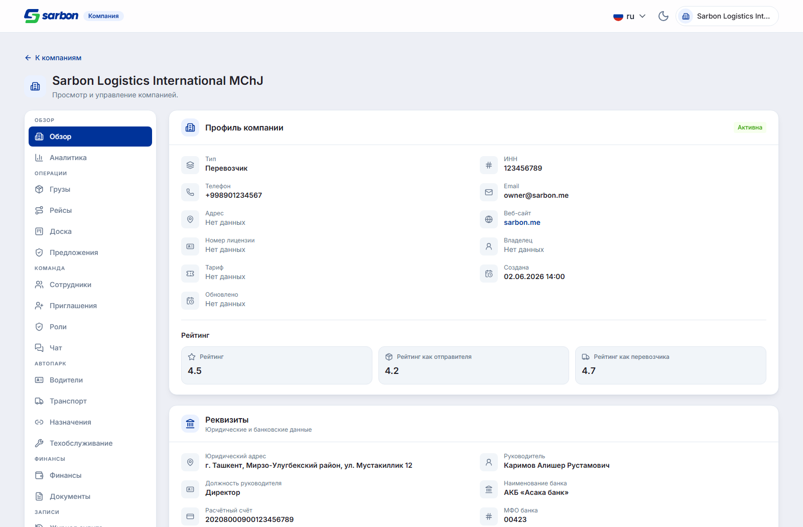
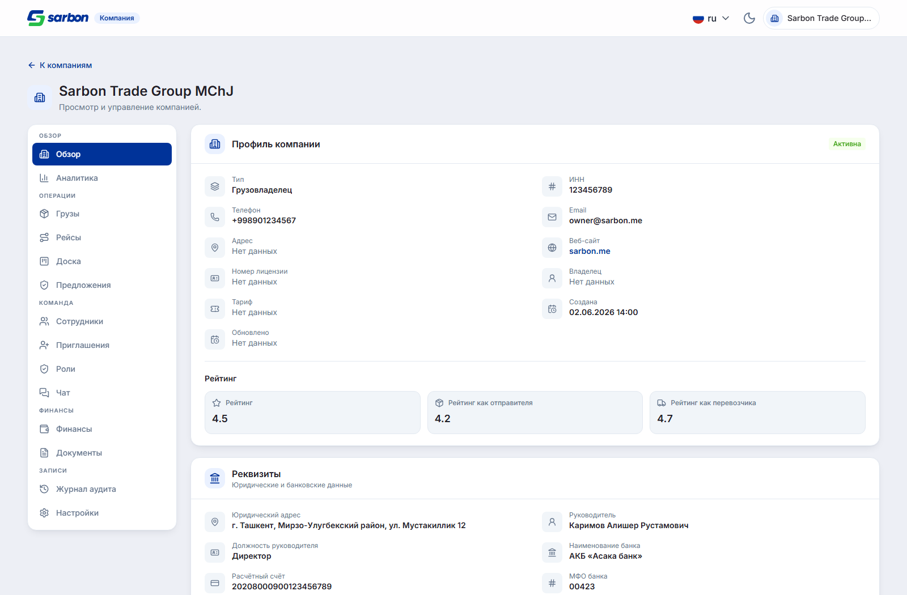
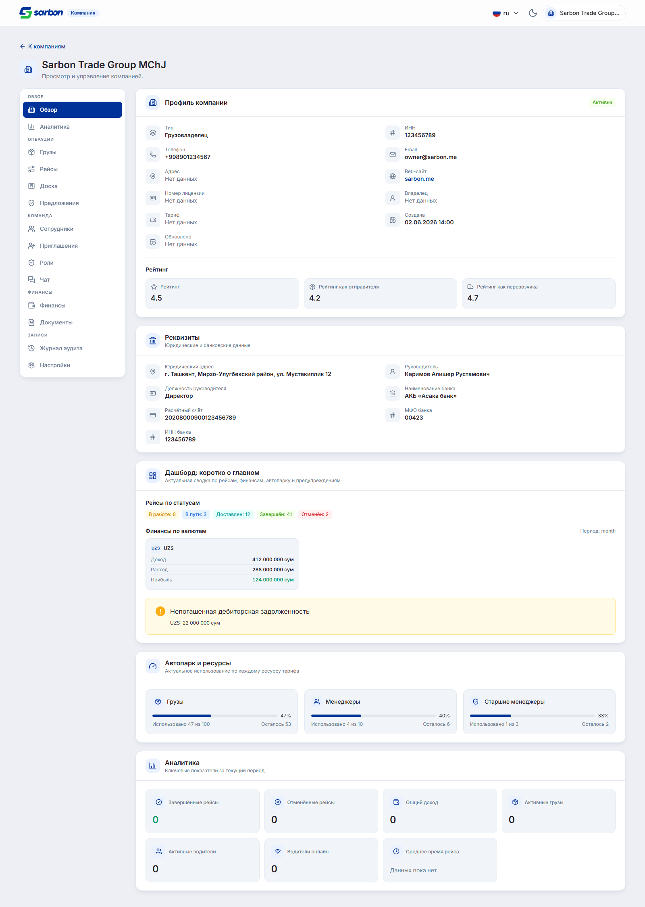
Раньше таблица печатала сырые enum-коды бэкенда (create, user_company_role,
company_user), а в детальной панели лежал JSON.stringify объектов
old_data/new_data вместе с полными UUID. Добавлены
prettifyAuditToken, словари действий/сущностей/типов исполнителя и diffCompanyAuditData;
панель переписана в список «было → стало».
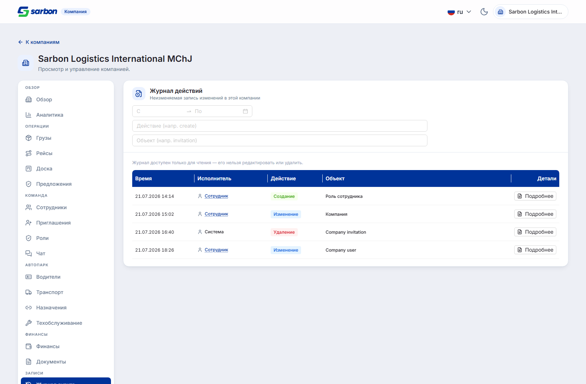
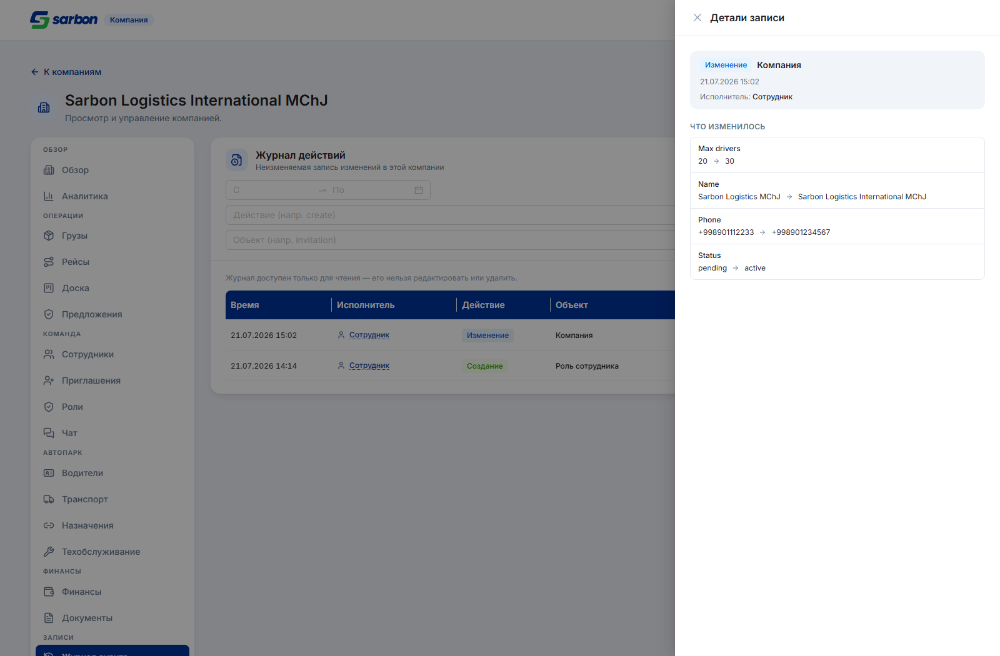
--sarbon-shadow-card (мягкая двухслойная тень в дне, почти нулевая
в ночи) — карточки, боковая панель и скелетоны перестали сливаться с фоном. Это видно на всех скриншотах
раздела компании выше.
Два обращения по вкладке «Роли». Первое — от владельца продукта: выставляешь «Разрешено», жмёшь «Сохранить», получаешь тост об успехе, и все переключатели тут же откатываются на «Не задано». Вопрос был «это фронт или бэк» — ответ: поведение фронта, но под ним дыра в API.
pending, а обработчик успеха делал setPending({}) — стирал единственный
источник, из которого переключатели читались. Так происходило независимо от того, сохранились данные или нет./v1/companies/{companyId}/roles/{role}/permissions
имел только PUT — GET'а не было ни там, ни где-либо ещё, поэтому фронт физически не мог прочитать
то, что сам же записал. Отправляемое тело при этом спецификации соответствовало (проверено живым тестом).resolveRoleSegmentValue / mergeAppliedRoleOverlay /
removeOverlayKey: сохранённый срез складывается в карту applied, а не выбрасывается;
точечный откат (DELETE) чистит ключ из обеих карт; смена роли сбрасывает обе. На бэкенд заведён тикет
company-role-permission-read-backend-ticket.md с просьбой добавить
GET .../roles/{role}/permissions.
Вкладка всегда показывала все 7 настраиваемых ролей, включая три «автопарковые»
(SeniorDriverManager, DriverManager, FleetManager) для грузовладельцев
без автопарка — их настройка всё равно вернулась бы с
role_not_allowed_for_company_type. Добавлены isRoleAvailableForCompanyType +
configurableRolesForCompanyType; неизвестный тип «падает открыто» (показывает все роли), а не
прячет по догадке.
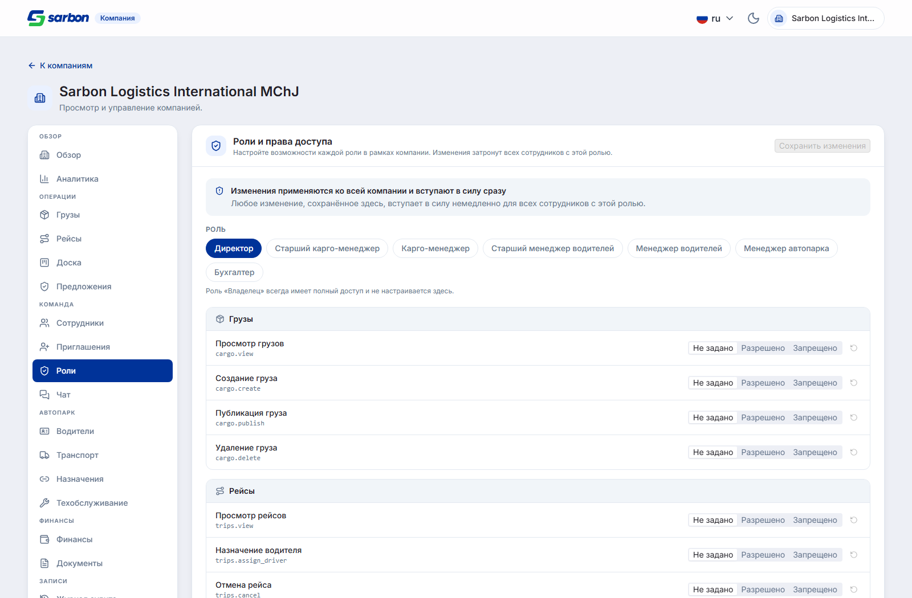
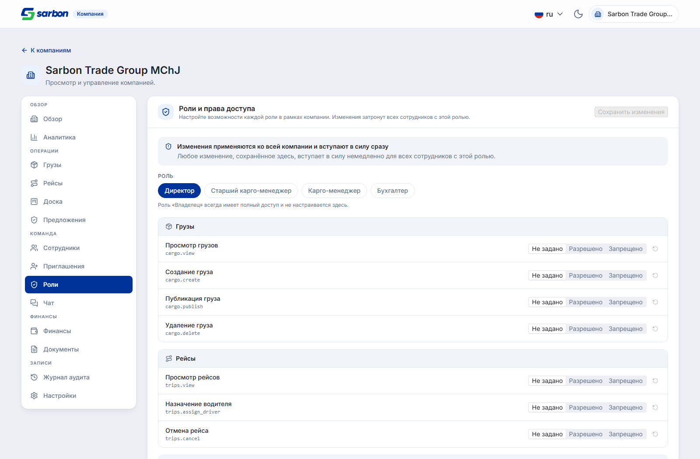
На /company/:companyId/chat нижняя левая строка боковой панели показывала аватар «?» и подпись
«Вы» вместо имени вошедшего пользователя компании. Причина: ChatSidebarPanel — часть
переиспользованной диспетчерской страницы чата, и его футер был единственным местом, читавшим личность
напрямую из диспетчерского стора в обход surface-aware useChatIdentity. На поверхности компании
этот стор пуст. Хуже того: если в браузере параллельно жила диспетчерская сессия, в футер компании утекала
бы её личность.
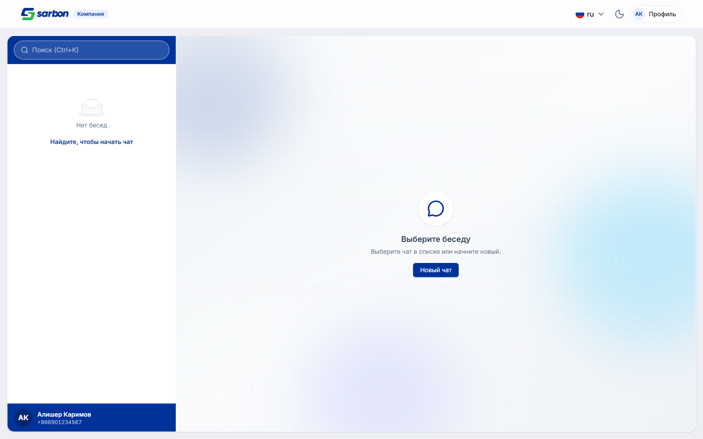
resolveChatSelfDisplay и хук useChatSelfDisplay (6 тестов); диспетчерский
/chat не изменился.
/accept-invite при живой сессии
Авторизованный приглашённый, открывший ссылку-приглашение, попадал в бесконечный цикл
accept-invite → company/login → company → accept-invite: адресная строка мигает, вечный
спиннер, ни финальной карточки, ни выхода кроме закрытия вкладки. Замерено до фикса на дев-сервере:
844 POST'а accept и 242 навигации за 8 секунд.
classifyAcceptInvitationError откатывается к
login_required на любой 401 без маркера — правильное поведение для гостя. Но
onError вызывал detourToLogin() безусловно, а при живой сессии этот объезд —
замкнутый круг: гвард сбрасывает авторизованного со страницы входа на /company, лейаут
потребляет «хлебную крошку» отложенного приглашения и возвращает назад, страница монтируется заново
со свежим attemptedRef. Условие: обновление токена должно успевать — поэтому кусало
именно здоровые сессии, а не протухшие.shouldDetourToLogin(kind, isAuthenticated). После:
2 POST'а и 2 навигации, стабильная карточка ошибки с предложением войти под другим аккаунтом.
Гость по-прежнему уезжает на вход за одну навигацию.
После переключения компании во вкладке A вкладка B продолжала рисовать компанию A, хотя её запросы уже
несли JWT компании B — либо 403 not_member_of_company, либо, что хуже, правдоподобные данные,
подписанные не той компанией. Кросс-табовый слушатель storage реагировал только на
COMPANY_TOKEN, а syncAuth() читает ещё контекст и профиль; переключение пишет
токен первым, контекст вторым — пассивная вкладка перечитывала старый контекст и игнорировала его запись.
Теперь слушаются все три ключа; порядок записи не тронут (токен обязан усваиваться первым).
Действие в строке (и передача после создания) открывало вкладку назначения владельца с пустым полем
Company ID — работало только если вкладку уже открывали в этой сессии. AntD монтирует панель вкладки при
первой активации, поэтому императивный assignForm.setFieldValue отрабатывал по неподключённому
инстансу формы. Решение — forceRender: true на вкладке; дополнительных запросов не стоит,
поиск владельцев и так включается только с двух символов.
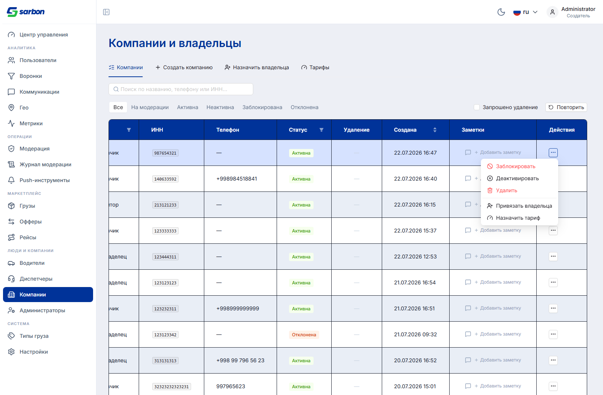
/admin/companies: «Привязать владельца» и «Назначить тариф» открываются с корректно засеянным id компании.
Блок «Требует внимания» показывал только грузы и водителей из totals, а счётчики
карго-менеджеров и менеджеров водителей тянул отдельным запросом к
/v1/admin/analytics/moderation. Бэкенд начал отдавать все очереди прямо в
totals (pending_moderation_cargo_managers, …_driver_managers,
…_companies, …_drivers_kyc) — лишний запрос со своим спиннером и прочерками
удалён, добавлены строки «Компании» (→ ?tab=company) и «KYC водителей» (→ ?tab=passport),
груз теперь тоже ведёт на свою вкладку. График получил height: "100%" внутри
lg:items-stretch, чтобы тянуться на высоту выросшей левой колонки вместо фиксированных 176px.
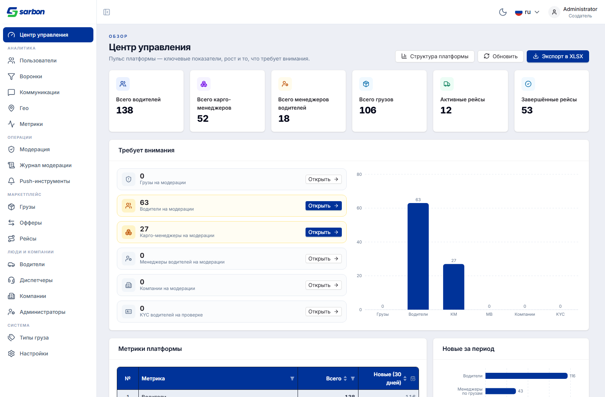
Четыре экрана подряд — вход, регистрация, OTP, завершение регистрации. Общий знаменатель: наружу прорывались машинные коды бэкенда, а часть отказов вообще ничего не показывала.
| Экран | Что было | Что стало |
|---|---|---|
| Вход 13:00 |
Неудачный вход молчал; сырые коды бэкенда в тосте; при пустом поле показывалась не та ошибка; вкладки способа входа не работали с клавиатуры и не были размечены как таблист | Локализованное сообщение на каждый исход, единый разбор кодов через companyAuthErrorText, корректная валидация пустого поля |
| Регистрация 13:12 |
Повторная отправка кода понижала поток регистрации до входа; сырые коды; путь языка собирался руками | Повтор переиздаёт тот же запрос, что и шаг регистрации; путь через buildCompanyPath |
| OTP 13:40 |
Молчаливый тупик при некорректном 200; сетевые ошибки списывали попытки к лимиту в 5; сырые коды | Явная ветка отказа, isTransientApiError перед счётчиком неверных попыток |
| Завершение 13:45 |
«Уже зарегистрирован» оставлял на форме, которая могла только снова упасть в 409 | Переход на вход компании с предзаполненной личностью (через router state — телефон не попадает в URL и историю) |
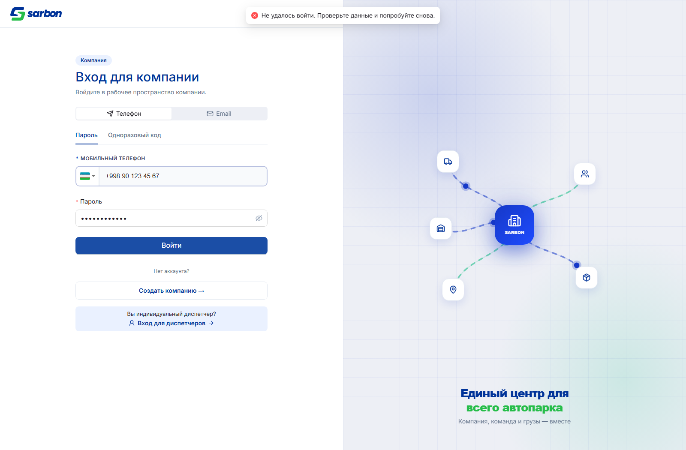
invalid_credentials → «Не удалось войти. Проверьте данные и попробуйте снова.» Оба переключателя на месте: личность (Телефон/Email) и способ (Пароль/Одноразовый код).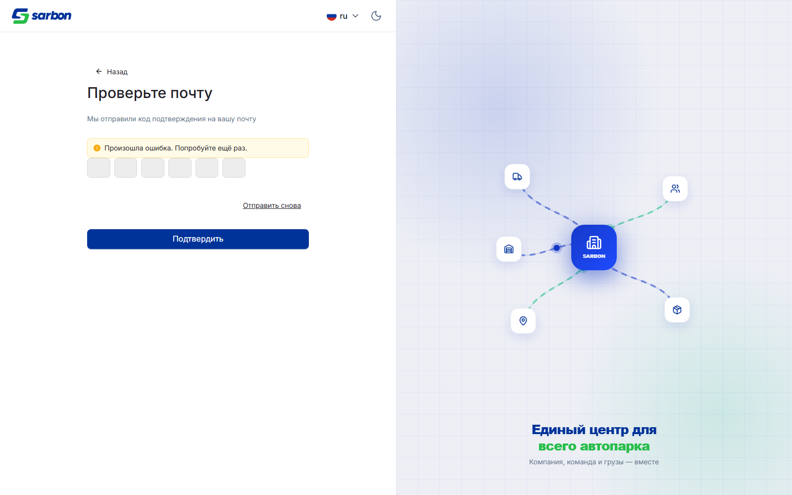
Обратный отсчёт был одним глобальным таймером на все идентификаторы и все поверхности авторизации: 429 по одному номеру блокировал кнопку для любого другого номера и для всех пяти диспетчерских экранов сразу. Переписан на отсчёт с областью действия по идентификатору; чистая страница компании больше не наследует диспетчерский отсчёт.
already_exists. Эндпоинт отвечает на дубль
голым 409 без data.fields, поэтому карта полевых ошибок его не ловила и сырое описание
уходило в тост — непереведённое и не привязанное к полю, которое его вызвало. Добавлен
isCompanyInnTakenError: сообщение прикрепляется к полю ИНН через form.setFields
+ scrollToField.POST /companies означает, что компания
существует, и повторная отправка могла только упасть в 409 по тому же ИНН без объяснений.
Теперь: честное сообщение + инвалидация списка + переход на него, где компания уже видна.loading кнопки отслеживал
только первую мутацию; пока шёл follow-up PATCH, форму можно было отправить повторно.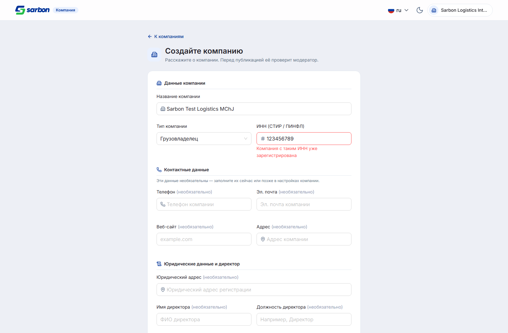
company.profile.companies.rating.*
не существовало ни в одной из 15 локалей (единственное такое семейство во всём разделе компании) —
любая компания с числовым рейтингом печатала
company.profile.companies.rating.overall: 4.5. Ключи добавлены во все 15 локалей.resolveActiveCompany
в конце цепочки берёт «первую компанию» — это эвристика отображения, а не гарантия области действия
JWT. При обычном входе (без серверного is_current и без сохранённого контекста) это
означало GET /v1/companies/:id → 403 not_member_of_company → вечная карточка
ошибки, чей «Повторить» не мог сработать в принципе. Добавлен isCompanyDetailFetchable,
который пускает запрос только по подтверждённой сервером строке; а случившийся 403 показывает подсказку
«откройте компанию», а не ошибку с повтором.user?.phone || '—', хотя регистрация поддерживает email-личность и телефон обнуляем.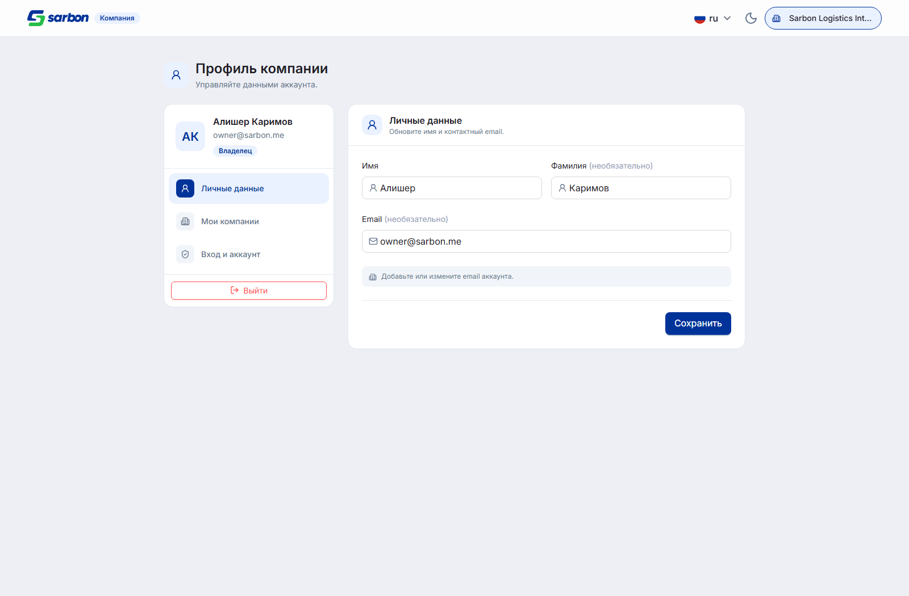
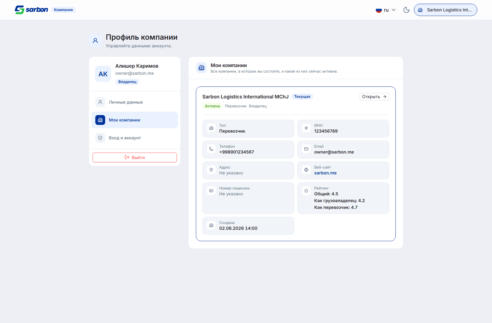
Сплошной аудит на чтение (авторизация, стор/сессия, дом/создание/профиль/оболочка, 18 секций рабочего пространства). Один функциональный баг высокого приоритета и кластер средних.
useMemo колонок офферов не
перечислял offersCargo в зависимостях (за eslint-disable). Панель офферов
открывается установкой именно этого состояния — ни одна перечисленная зависимость не менялась,
переиспользовалось замыкание с offersCargo === null, и «Принять» первым действием
молча не делал ничего: ни запроса, ни спиннера, ни ошибки.setActiveCompany перенесён внутрь гарда наличия токенов; хардкод
'/create' → paths.COMPANY_CREATE; устаревшие комментарии; депрекация AntD 6
Alert message → title в 11 файлах раздела.
Подтверждение удаления обещает «можно восстановить», но список не умеет показывать удалённые
(проверено по живой спецификации: GET /v1/admin/companies принимает только
pending|active|inactive|blocked|rejected + deletion_requested). Как только строка
уезжала из списка, у POST .../restore не оставалось точки входа — эндпоинт, действие, иконка и
переводы были подключены, но не рендерились никогда. Единственный момент, когда восстановление достижимо,
— сразу после удаления: успех теперь показывает 10-секундное уведомление с кнопкой «Восстановить».
Просмотр и восстановление старых удалений по-прежнему требует параметра на бэкенде.
Обе колонки с фильтром-автофильтром (тип, статус) были неконтролируемыми, а Segmented над таблицей
подменяет весь серверный набор данных: галочка, поставленная в одном статусе, продолжала фильтровать
строки следующего статуса до пустой таблицы без видимой причины. Подключён документированный паттерн
pruneFilteredValue: контролируемый filteredValue из onChange таблицы,
подрезаемый по значениям, реально присутствующим в текущих строках.
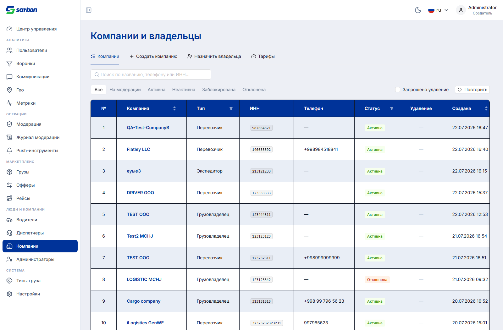
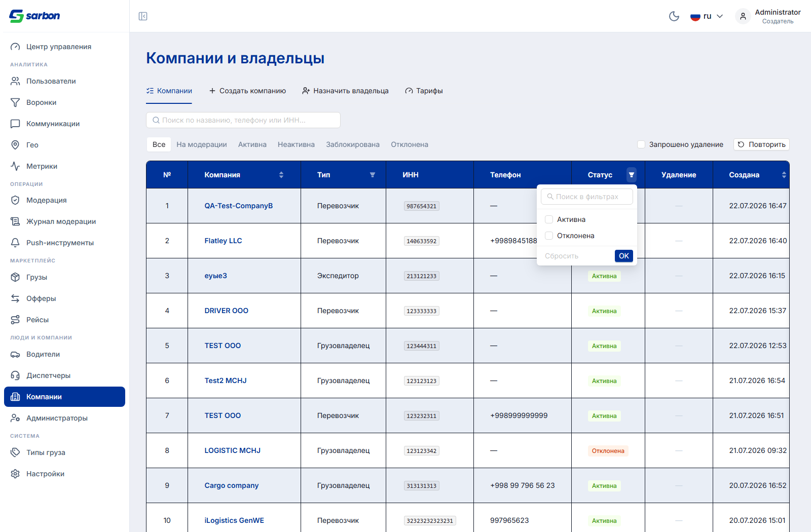
Вкладка «Компании» в /admin/moderation не получала onAssignTariff, поэтому
администратор, работающий очередь там, не имел способа задать компании лимиты max_*
(тариф — единственный механизм). В отличие от привязки владельца, у тарифа нет цели для диплинка — это
модальное действие строки, поэтому AssignTariffModal теперь смонтирована и в хабе.
Кнопка «Сделать тарифом по умолчанию» меняла платформенный дефолт вообще без подтверждения — закрыта
modal.confirm (новый ключ в 15 локалях).
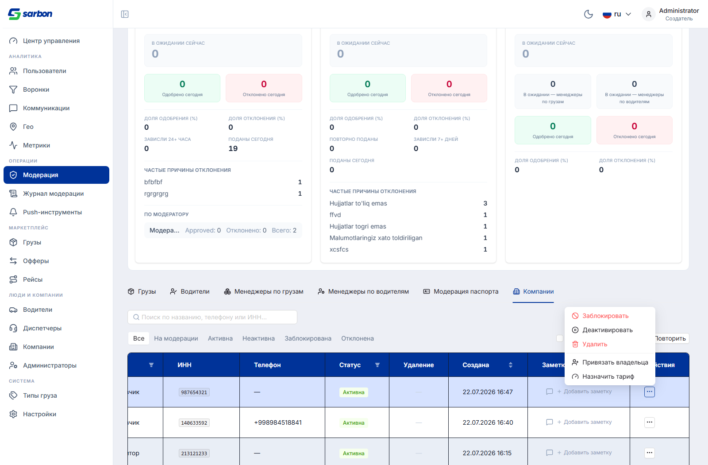
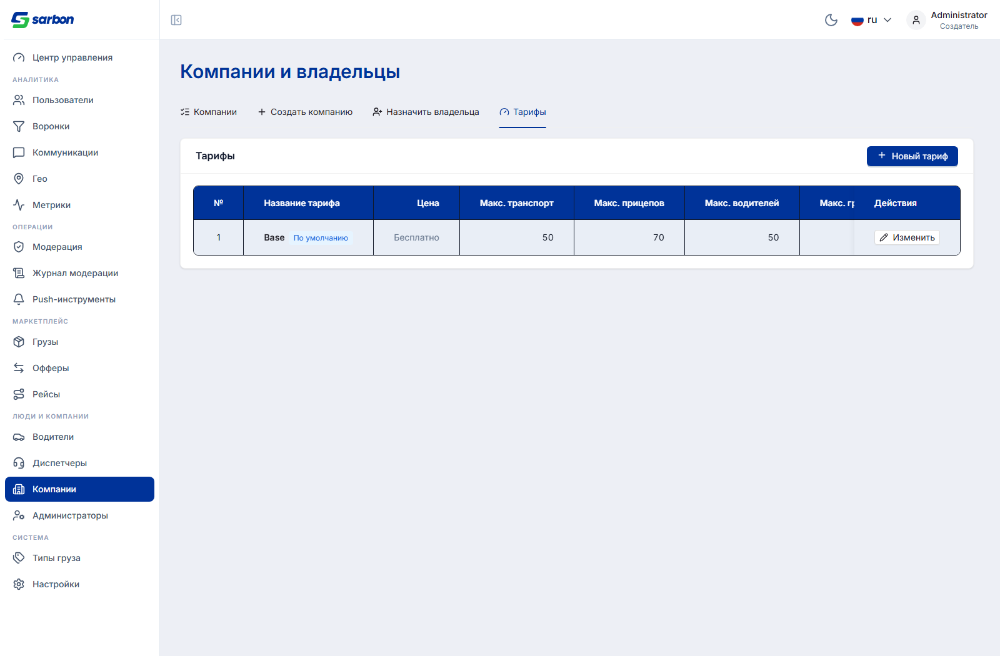
created_at в очереди и в детальной панели шло через formatDateTimeIsoClock,
который игнорирует смещение, — UTC-метка с Z рисовалась как локальное время и отставала на
5 часов. Переведено на formatCargoRouteDateTime. В форме создания: status был
свободным текстовым полем (опечатка → сырой 400 бэкенда) и стал Select по каноническому списку;
у inn не было правила формата — теперь та же проверка 9/14 цифр, что и в форме владельца;
в блоке лимитов было 7 из 8 канонических полей — добавлен max_trailers. Поиск владельца
слал запрос на каждое нажатие клавиши — задебаунсен на 300 мс.
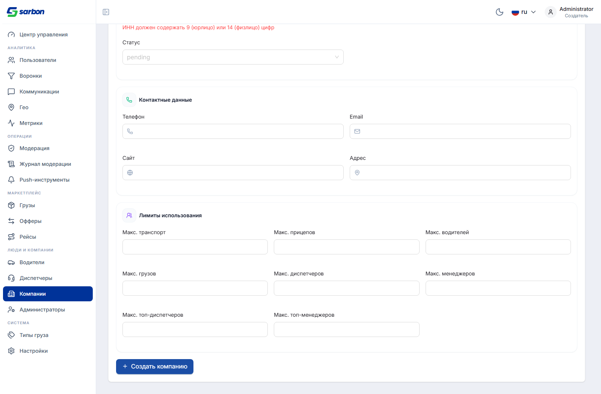
123 в поле ИНН → «ИНН должен содержать 9 (юрлицо) или 14 (физлицо) цифр»; «Статус» — выпадающий
список; в лимитах присутствует «Макс. прицепов».
Нанятый компанией диспетчер получил переключатель «личный ↔ компания» в шапке и раздел «Моя компания» в
боковом меню. POST /v1/dispatchers/switch-context выдаёт новую пару токенов — это смена
сессии на уровне JWT, а не экрана: activeContext хранится в useAuthStore
(ключ DISPATCHER_CONTEXT) и синхронизируется между вкладками, а
useDispatcherContextSync сбрасывает кеш при смене — по той же схеме, что уже работает при
переключении компании у владельца. Диспетчер без членств не видит контрол вовсе: выбирать не из чего.
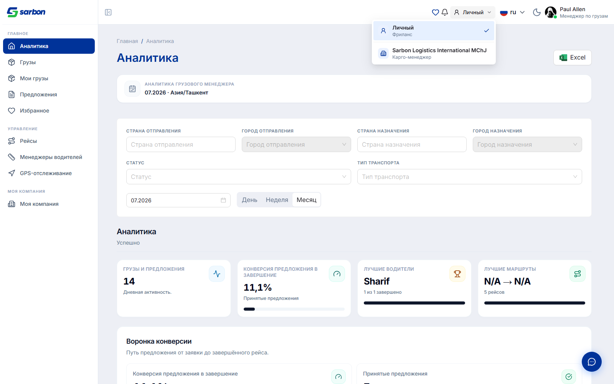
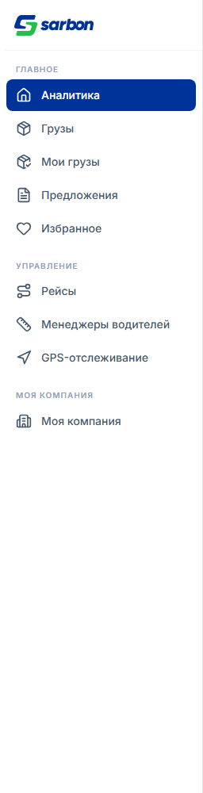
companyRegisterPrefill) и параметр intent=invite, который приводит приглашённого
не на шаг «создать компанию», а во входящие приглашения. Заодно удалено мёртвое: генератор каналов OTP,
три неиспользуемых чарта командного центра и ~23k строк временных спек-дампов и артефактов из корня репозитория.
В конце дня — обзор по 8 углам (построчно, удалённое поведение, межфайловые связи, переиспользование, упрощение, эффективность, уровень абстракции, соглашения) по всему несохранённому диффу раздела компании. Выжило 12 находок, все исправлены.
isMachineErrorCode подавлял любое описание из строчных ASCII-символов — но
узбекский язык платформы по умолчанию и пишется строчной латиницей, поэтому легитимное
однословное локализованное сообщение («bloklangan», «topilmadi») было неотличимо от машинного кода и
заменялось общей заглушкой. Регулярное выражение теперь требует хотя бы один разделитель
_/-/. (все коды этого бэкенда многосоставные:
too_many, already_exists, not_member_of_company) и стало
регистронезависимым, чтобы ловить и OTP_EXPIRED.
useMutation строки, но onDone() уже перезапросил список, выбросил мягко
удалённую строку и размонтировал её компонент — а TanStack Query v5 пропускает колбэки уровня
mutate, когда наблюдателя больше нет. POST уходил, но ни тоста, ни обновления не следовало.
Восстановление переведено на прямой apiRequest, который переживает строку так же, как
живёт уведомление на уровне приложения.max(сохранённое, зеркало).isOtpAttemptRejected принимал
за вердикт любой 4xx. Исключены 401/408/425/429.applyApiFieldErrors. Порядок переставлен, голый 409 стал запасным вариантом.not_member_of_company, а к подсказке
откатывается только 403 без причины.is_current: false во всех строках читался как «область неизвестна» — и
открывал ворота в тот самый 403, ради предотвращения которого гард существует.getHttpStatus/hasHttpStatus; модалка тарифа в хабе закрывала сама себя,
проглатывая предупреждение о превышении квоты; таблица модерации перестраивала все колонки на каждый
клик пагинации/сортировки; дубль сообщения о пустом телефоне; личность в профиле, написанная трижды
с расходящимися ||/??.companyAuthErrorText
внутрь getApiErrorMessage, чтобы диспетчерская и админская поверхности перестали протекать
кодами; ограничение областью пяти диспетчерских отсчётов; вынос дублирующихся вкладок способа входа
и Segmented личности в общий компонент (у диспетчерского таблиста до сих пор нет клавиатурной поддержки);
постоянный список удалённых компаний вместо восстановления через отмену — требует параметра
include_deleted на бэкенде.
При съёмке скриншота гарда экрана OTP выяснилось, что на телефонном канале он не срабатывает.
CompanyOtpPage вычисляет phone = ensurePlusPrefix(searchParams.get('phone') || '').
При отсутствующем параметре это даёт строку '+' — непустую, поэтому гард
!identifier не срабатывает, и прямой заход на /company/otp без телефона
по-прежнему рисует живой экран ввода кода с адресатом «+». На email-канале
(?channel=email) гард работает корректно — см. скриншот в разделе 6.
Исправление: проверять не identifier, а исходный параметр (либо отбрасывать
'+' как пустое значение).
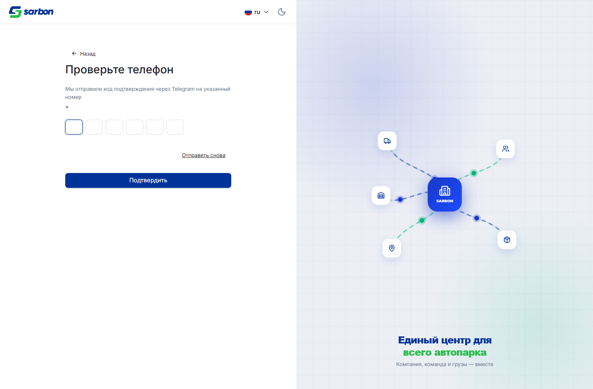
/ru/company/otp без ?phone: предупреждения нет, форма активна, адресат — одинокий «+».
| Проверка | Результат |
|---|---|
tsc -b (полная типизация проекта) | выход 0 |
pnpm build | выход 0 |
vitest (на конец дня) | 187 файлов / 2075 тестов |
eslint --max-warnings 0 | чисто на всех изменённых файлах |
| Синхронизация локалей | 15/15 (рейтинги профиля, тексты аудита, тариф по умолчанию, неясный результат создания, очереди центра управления) |
qa/verify-company-{workspace,surface,create}.mjs | выход 0; создание — «ALL CHECKS PASS» |
| Живая перепроверка (Playwright) | области отсчёта, отмена удаления, фильтры очереди, гард 403, права ролей, тип компании |
| Приём приглашения по ссылке при живой сессии | 844 POST / 242 навигации → 2 POST / 2 навигации |
| Чтение сохранённых прав роли | на 21.07 было заблокировано отсутствием GET; тикет заведён, бэкенд выдал GET утром 22.07 |
| Гард экрана OTP на телефонном канале | открыто — см. раздел 13 |
| Файлов затронуто | 83 в src/ и локалях (+2651 / −1257), 3 коммита + рабочее дерево |
Записей в bug.md | 16 за день |
take-company*.mjs,
take-admin*.mjs, take-dispatcher.mjs).